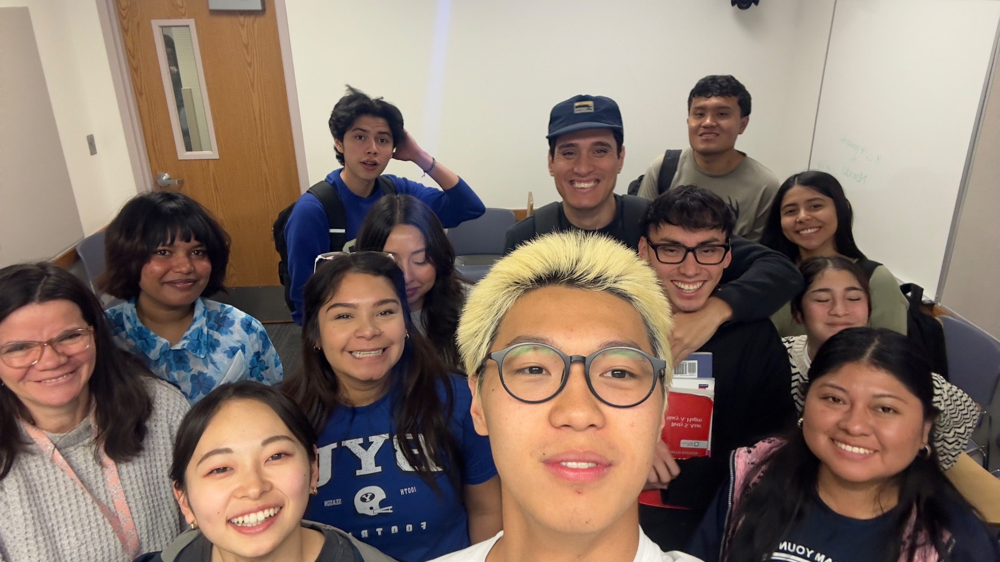
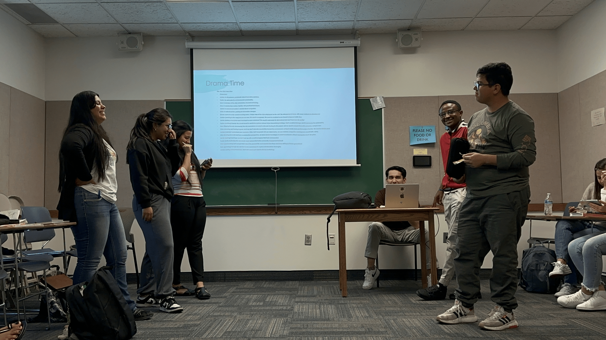
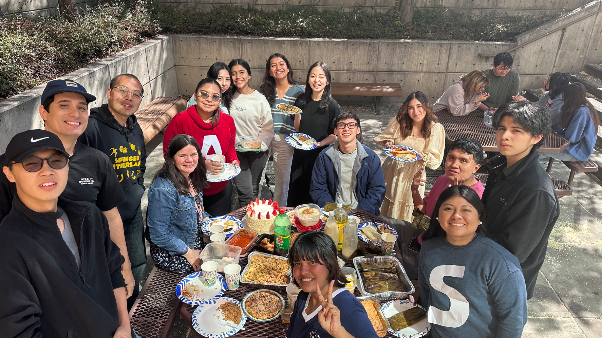
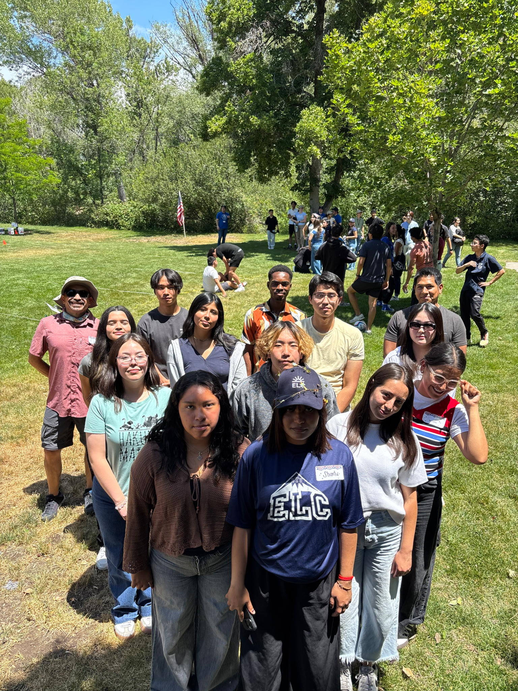
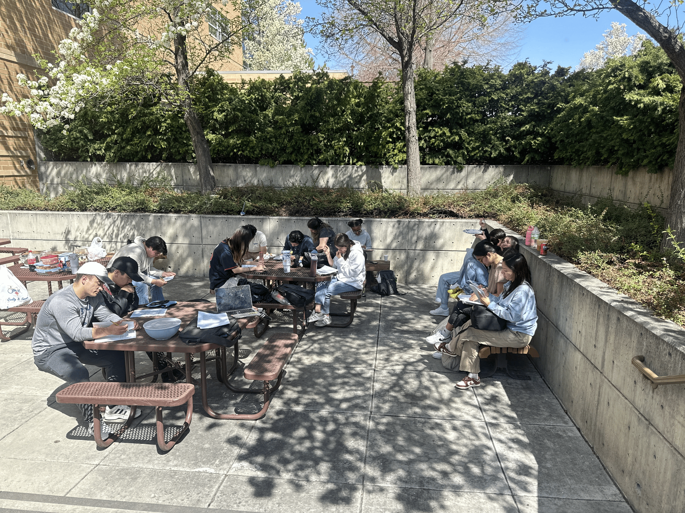
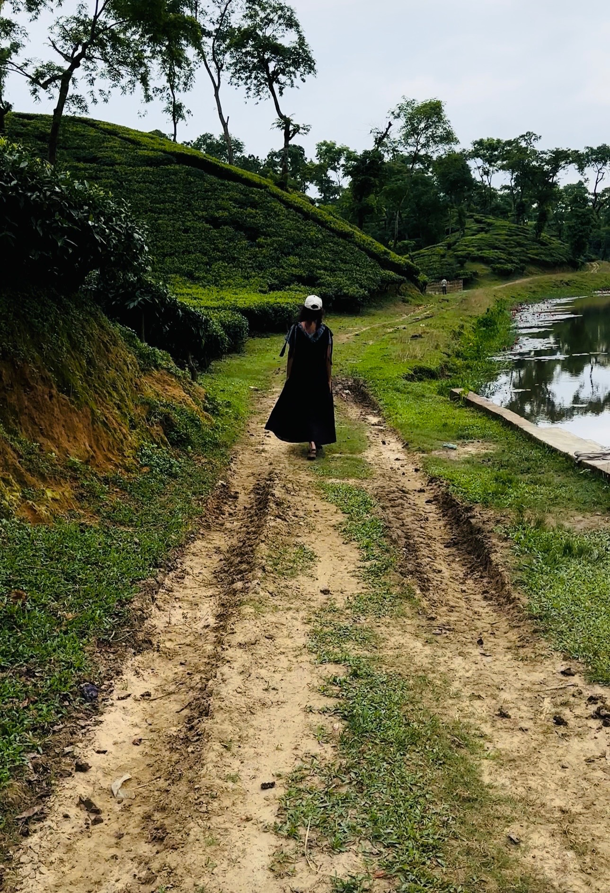
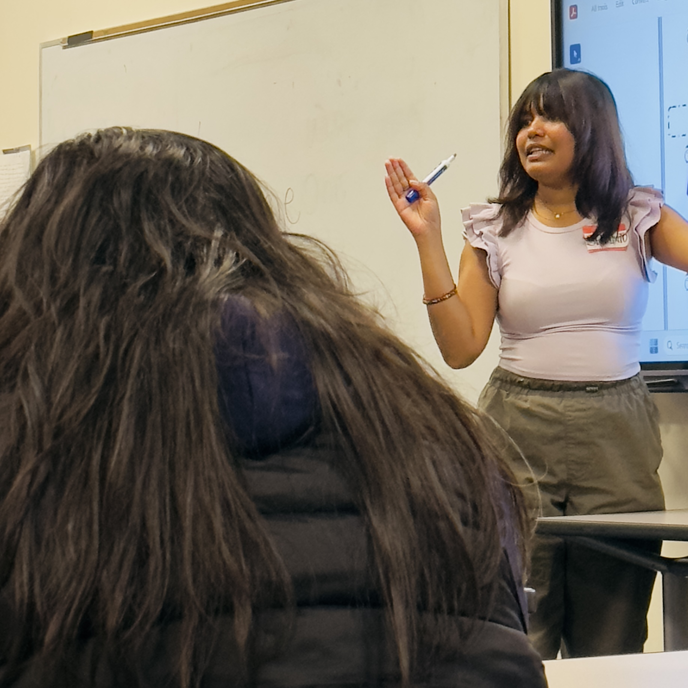
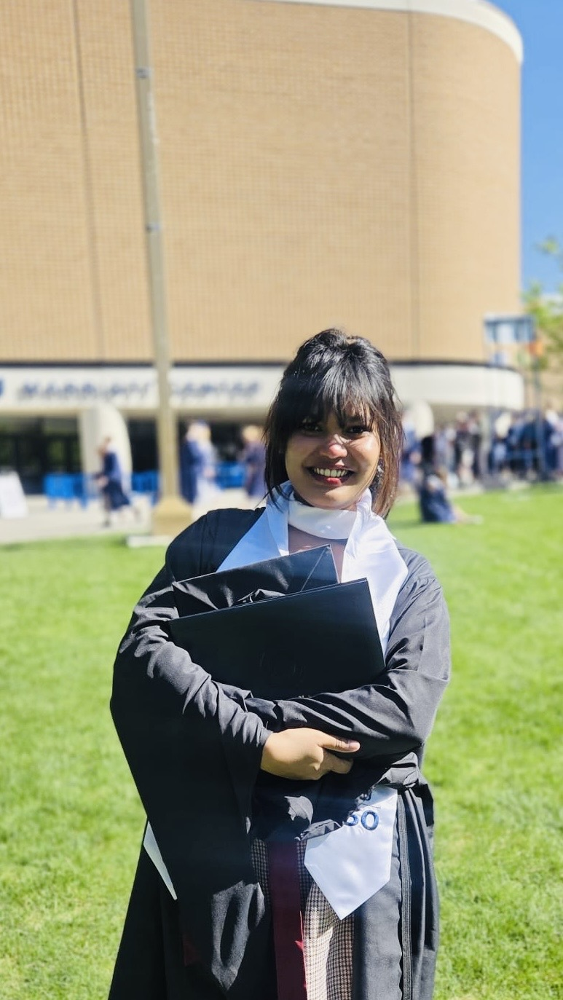

Master of Arts in Teaching English to Speakers of Other Languages (TESOL)
Brigham Young University
CGPA: 3.83 / 4.00
Relevant Coursework
M.A. in TESOL
Teacher of English to Speakers of Other Languages
ESL Instructor, Curriculum and Materials Developer, and Researcher
Professional TESOL Portfolio
Teaching • Curriculum • Assessment • Research
Portfolio
Select a collection to open individual lesson plans, syllabi, assessments, materials, and project evidence. All available content is hosted directly in this website.
Education
CGPA: 3.83 / 4.00
Relevant Coursework
Teaching Philosophy
“The beautiful thing about learning is that no one can take it away from you.”
Language education is about far more than helping students learn English. It is about expanding opportunities, increasing confidence, and giving learners access to communities, careers, and ideas that may once have felt beyond their reach. Every student enters the classroom with unique experiences, strengths, aspirations, and ways of learning. These differences are not challenges to overcome but assets that shape the learning experience. My responsibility as an educator is not simply to teach English, but to create the conditions in which every learner can succeed, grow, and ultimately become an independent and confident language user.
I believe that every meaningful learning experience is built upon relationships. The relationship between teacher and student establishes trust, encouragement, and psychological safety. The relationships students build with one another create opportunities for collaboration, peer learning, and authentic communication. Finally, the relationship learners develop with the language itself determines whether they see English as a subject to pass or as a lifelong tool for connecting with the world.
Building these relationships begins with understanding my students. Through ongoing needs analysis, open communication, and genuine curiosity about their goals, I strive to understand not only where students are academically but also who they are as individuals. Every instructional decision—from lesson design to assessment—is guided by the learners sitting in front of me rather than by a predetermined script.
As an English language educator, I strive to create classrooms where students actively construct knowledge rather than passively receive it. Learning happens through meaningful communication, collaboration, problem-solving, reflection, and purposeful interaction. I design lessons that require students to think critically, negotiate meaning, solve authentic problems, and use language for real communicative purposes.
I believe that students should do more of the thinking, speaking, and discovering than I do. My role is not to dominate classroom conversation but to facilitate learning by providing carefully scaffolded experiences that gradually move students from guided practice toward confidence, automaticity, and learner autonomy.
Effective learning occurs when students are challenged without becoming overwhelmed. I believe in maintaining high expectations while providing the support necessary for students to reach them. Carefully designed scaffolding, differentiated instruction, clear learning objectives, and purposeful feedback allow learners to attempt increasingly complex tasks with confidence.
Language learning naturally involves uncertainty and mistakes. Rather than avoiding errors, I encourage students to view them as an essential part of the learning process. A classroom built on empathy, encouragement, and mutual respect lowers anxiety while promoting resilience, curiosity, and a growth mindset.
I believe that motivation grows when students understand why they are learning something. For this reason, I consistently connect classroom activities to real-life situations, academic goals, professional aspirations, and meaningful communicative purposes.
“Why does this matter?”
When students recognize the relevance of what they are learning, they become more engaged, more invested, and more likely to transfer their learning beyond the classroom. Authentic materials, meaningful tasks, and opportunities to apply language in realistic contexts help bridge the gap between classroom learning and the real world.
Assessment is not simply a tool for assigning grades; it is an opportunity to guide learning. I use formative assessment to understand where students are, provide timely and constructive feedback, and adjust instruction based on their progress. Effective assessment should help learners recognize both what they have accomplished and what their next steps should be.
I also believe assessment should empower students to become reflective learners. Through self-assessment, goal setting, and regular opportunities to monitor their own progress, students develop greater metacognitive awareness and take increasing ownership of their learning.
Ultimately, I believe the greatest measure of effective teaching is not how much students rely on their teacher but how confidently they continue learning without one. I want my students to leave my classroom with stronger language skills, greater confidence, effective learning strategies, and the belief that they are capable of achieving goals they once thought impossible.
Education does not end when a course is over. It continues every time students ask thoughtful questions, seek new opportunities, engage with different communities, and use language to build meaningful relationships throughout their lives. If my students leave my classroom as curious, resilient, self-directed, and lifelong learners, then I have accomplished what I set out to do as an educator.





Teaching Evaluations
Open each collection to view supervisor feedback, peer observation, student messages, and reflective responses.
Professional Development
Open each collection to read research, publications, conference work, collaborative projects, and professional activities.
CV
Me in Four Dimensions
MY STORY • MY JOURNEY • MY PURPOSE
Thank you for stopping by.
If someone had told me years ago that I would become a English language teacher, I probably would not have believed them. While I loved stories and literature, learning English itself was often a challenge. My educational journey began in Bangladesh, where my interest in literature eventually led me to pursue a degree in English Language and Literature. What started as a love for stories gradually evolved into a deeper interest in language, learning, and education.Looking back, those struggles became one of the greatest strengths I bring to my classroom today. They remind me that struggling with a language is not a sign of inability—it is simply part of the learning process. Because I have been in my students' position, I intentionally design lessons that reduce anxiety, provide meaningful support, and celebrate progress rather than perfection.
As both a language learner and language teacher, I understand the excitement, uncertainty, and courage that come with learning in a new language. My goal is to create engaging, supportive learning environments where students are encouraged to take risks, ask questions, and develop confidence in their abilities.
Currently pursuing my MA in TESOL at Brigham Young University, I continue to explore how research, assessment, and effective teaching practices can better support language learners. Whether I am teaching, conducting research, designing materials, or learning from my students, I am driven by a desire to make education more meaningful, accessible, and empowering.
This portfolio represents my growth as an educator, researcher, and lifelong learner. I hope it provides insight into my experiences, teaching philosophy, and the values that guide my work.
Thank you for taking the time to learn more about my journey.
Warm regards,
Shantona Mir
Learning Journey

Unlike many language professionals, I didn't grow up fascinated by learning foreign languages. My first language obsession was much closer to home.
I grew up outside Dhaka, the capital of Bangladesh, where people speak a regional dialect. It was the language of my home, my neighborhood, and pretty much everyone around me. But there was another version of Bengali—the standardized form you hear on television, in news broadcasts, and in formal settings. Somehow, it sounded elegant, polished, and almost magical to me.
Here's a fun fact: Bengali is often listed as one of the sweetest-sounding languages in the world. Did you know that?
Ironically, although Bengali is my mother tongue, the standard variety almost felt like a second language. My mother never spoke it at home, so hearing it was always a little special.
At six years old, I developed an unusual hobby: collecting new Standard Bengali words and practicing their pronunciation until I could say them perfectly. Every new word felt like discovering a tiny treasure. Then, of course, I would casually drop it into conversations with my five childhood friends—as if I were the most sophisticated person in the village. Looking back, I'm fairly certain they were much less impressed than I was.
I didn't know it then, but those tiny moments—chasing the perfect pronunciation, falling in love with words, and noticing how people spoke differently—were quietly shaping the language nerd I would eventually become.

Well, then came undergrad... and I marched right into it, completely unaware that English was about to humble me for the next four years.
From 2018 to 2022, I studied English Language and Literature at Daffodil International University. The funny part? I had spent Class 6 through Class 12 studying science. But one day, my older brother decided that English had better career prospects. As you can probably guess, in a typical Asian family, that wasn't much of a discussion.
The first semester was rough. I quickly realized that memorizing English for school exams and actually understanding English were two completely different things. I had learned English as a subject, not as a language.
So, I made myself a promise: if nobody was going to teach me the language, I'd do it myself. Since university also expected us to use Standard Bangla, I found myself teaching both Standard Bangla and English at the same time. I talked to myself, narrated my day, stood in front of the mirror, and restarted sentences every time I got stuck looking for a word.
People often told me, "But you're studying English Literature—you already go to a language school!" I never understood that logic. To me, literature and language learning were two completely different things.
By the time I graduated in 2022, I was proud not only of my CGPA but also of the fact that I had learned how to become my own teacher. And honestly? I'm still learning.

In 2024, I began teaching at the English Language Center at Brigham Young University as a Graduate ESL Instructor, working with multilingual learners from all over the world. Every classroom became a place where different languages, cultures, and life stories came together—and I loved every minute of it.
Teaching quickly became my favorite kind of puzzle. Every class learned differently, and every lesson reminded me that there is no such thing as a "perfect" lesson plan. Sometimes my best activities fell flat, while the five-minute game I came up with on the spot became everyone's favorite.
As I learned more about language teaching and second language acquisition, I often caught myself thinking, "I wish someone had taught me English like this." Many of the strategies I now use with my students are the very things I wish I had experienced as a language learner. It has completely changed the way I think about teaching—and the kind of teacher I want to become.

In 2024, I packed my life into two suitcases and moved halfway across the world to pursue an M.A. in TESOL at Brigham Young University, graduating in Summer 2026. It was my first time living away from home, and suddenly everything—from the weather to the classroom—felt completely different.
Graduate school challenged me in ways I never expected. Beyond becoming a better language teacher, I discovered a growing passion for language assessment, curriculum development, educational equity, and research. It was also where I found mentors who challenged my thinking, classmates who broadened my perspective, and opportunities I never imagined I would have.
Looking back, earning my master's degree was never just about getting another qualification. It completely changed the way I think about language education and gave me the confidence to dream even bigger. A PhD no longer feels like a distant goal—it feels like the next chapter.
Contact